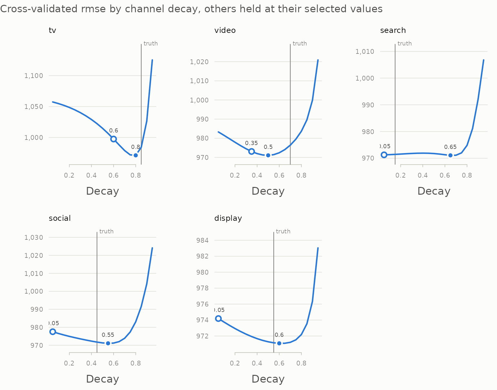
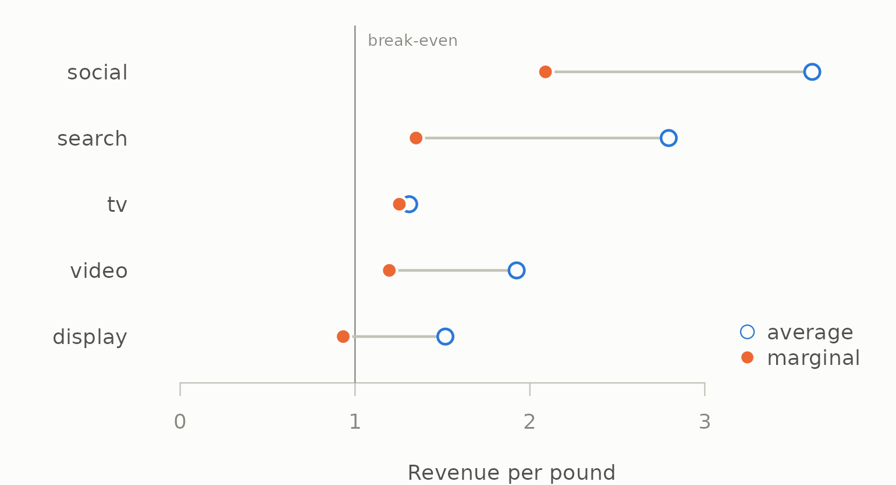
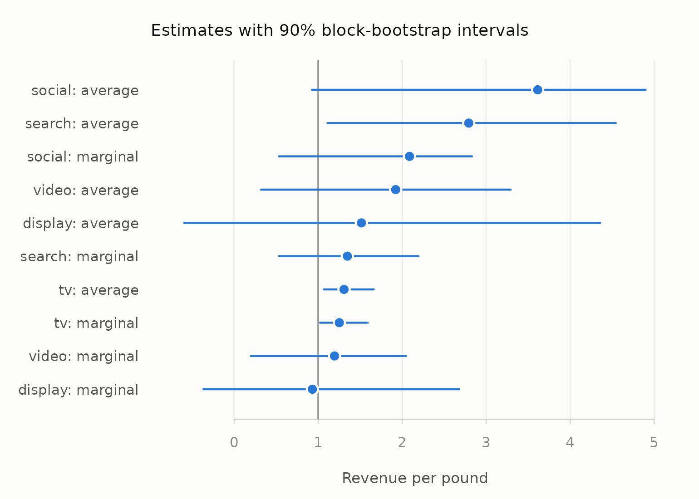
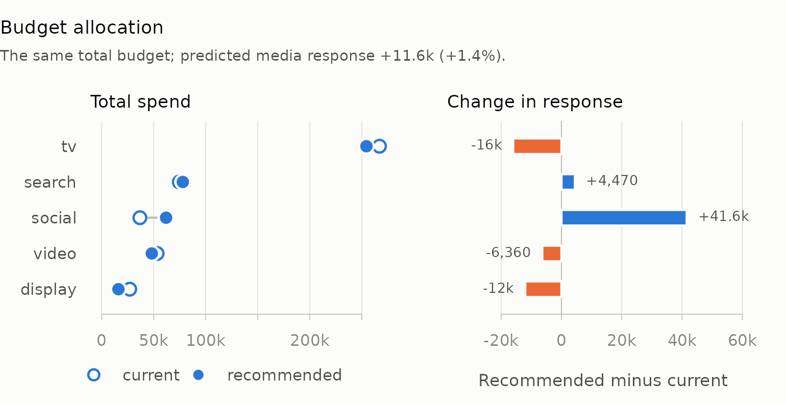

Walkthrough: from weekly spend to a budget recommendation
Source:vignettes/articles/budget-walkthrough.Rmd
budget-walkthrough.RmdThis article follows one question from raw data to an answer: if the
marketing budget stays the same, should any of it move between channels?
It uses the north geography of mm_weekly, 156 weeks of five
channels, generated from known parameters so that every step can be
checked against the truth.
The getting-started vignette, vignette("mediamix"),
introduces each function. This article is about using them together, and
about where the answer is solid and where it is not.
The setup keeps the parameters mm_weekly was generated
from in truth, and adds a week counter to serve as the
trend control:
library(mediamix)
data(mm_weekly)
channels <- c("tv", "video", "search", "social", "display")
truth <- attr(mm_weekly, "truth")
north <- mm_weekly[mm_weekly$geo == "north", ]
north <- north[order(north$date), ]
north$week <- seq_len(nrow(north))1. Check the data can answer the question
A model can only tell channels apart if they move independently of
one another and vary from week to week. diagnose_media()
checks both before anything is fitted:
d <- diagnose_media(north, media = channels, decay = 0.6)
d
#>
#> ── Media diagnostics
#> 156 observations across 1 series, 5 channels
#> Collinearity measured on adstocked media.
#> Ungrouped. On panel data, pass `by` so that collinearity is measured within
#> series.
#> ✔ No structural problems found.
#>
#> Inspect $variation, $collinearity, $correlations.
d$collinearity[, c("channel", "vif", "most_correlated_with", "correlation")]
#> channel vif most_correlated_with correlation
#> 1 search 1.188 tv 0.3173
#> 2 tv 1.176 search 0.3173
#> 3 social 1.169 display 0.2801
#> 4 display 1.148 social 0.2801
#> 5 video 1.076 display 0.1451decay = 0.6 measures collinearity after a representative
adstock, since smoothed series correlate more than raw spend and the
model sees the smoothed ones. No channel is collinear enough to make its
coefficient meaningless: the largest variance inflation factor
(vif) is 1.19, well under diagnose_media()’s
default warning level of 5. Every channel varies, but video and display
are dark, with no spend at all, in 37% and 33% of weeks, so they carry
less information than their row count suggests, which is worth
remembering when their numbers come out.
2. Carryover: how well does the data identify it?
Tune every channel’s carryover at once, in one model that also holds the controls, so no channel is credited with another’s effect or with the trend:
controls <- north[c("week", "price", "seasonality", "holiday")]
grid <- seq(0.05, 0.95, by = 0.05)
joint <- tune_carryover_joint(north[channels], north$revenue,
controls = controls, decays = grid)
rbind(truth = truth$decay[channels],
best = joint$best$decay,
one_se = joint$best_1se$decay)
#> tv video search social display
#> truth 0.85 0.70 0.15 0.45 0.55
#> best 0.80 0.50 0.65 0.55 0.60
#> one_se 0.60 0.35 0.05 0.05 0.05best is the minimum of each channel’s cross-validation
curve, and one_se the shortest carryover within one
standard error of it. The curves themselves show how firmly the data
pins each decay down:
plot(joint, truth = truth$decay)
Television, social and display land within 0.1 of the truth and video within 0.2. Search does not, and its profile says why: it is nearly flat, so the data holds almost no information about search’s carryover. For search the one-standard-error choice falls back to a short carryover, which here is close to right; for every other channel it is shorter than the truth.
The joint search does not tune saturation. To keep this walkthrough
about the decision rather than the estimation, the rest of it
uses the generating parameters, which is what a full joint search over
carryover and saturation, as in
vignette("tidymodels"), is trying to reach. Section 7 comes
back to what happens when television’s carryover is uncertain.
3. Fit the model
The model is ordinary least squares on the transformed media and the
controls. spec holds each channel’s carryover and
saturation. transform_plan() applies them to any spend plan
and returns the plan with each channel’s column transformed, so section
7 can reuse spec on budgets that were never run:
spec <- lapply(channels, function(ch) list(
adstock = list(decay = truth$decay[[ch]]),
saturation = list(half_max = truth$half_max[[ch]],
shape = truth$shape[[ch]])
))
names(spec) <- channels
media <- transform_plan(north, spec)[channels]
model_data <- cbind(media, controls)
fit <- lm(north$revenue ~ ., data = model_data)
round(rbind(estimate = coef(fit)[channels], truth = truth$beta[channels]))
#> tv video search social display
#> estimate 6013 1885 2622 2258 760
#> truth 5200 2400 4100 1800 900Even with the transforms right, the coefficients land well away from the truth: search’s is 36% too low and social’s 25% too high. That is three years of weekly noise, and section 8 shows what it does to the answer.
4. Where did the revenue come from?
contributions() splits each week’s fitted revenue into
one part per channel and a baseline, and roi() divides each
channel’s total contribution by its total spend to give its average
return:
contrib <- contributions(media, fit, index = north$date)
avg <- roi(contrib, north[channels])
avg
#> channel contribution spend roi
#> 1 social 132709 36716 3.614
#> 2 search 208307 74560 2.794
#> 3 video 102461 53248 1.924
#> 4 display 40853 26937 1.517
#> 5 tv 349629 266978 1.310Every channel returns more than it costs on average. On this table alone the tempting move is to take money from television, the lowest average ROI, and give it to social, the highest.
5. What would the next pound do?
Average ROI describes the budget that was spent. The reallocation
question is about the margin, and marginal_roi()
answers it by re-running the whole transform on a slightly larger
budget. Given the plan, the coefficients and spec, it does
every channel at once, and its roi column is the average
return from section 4:
marginal <- marginal_roi(north, coef(fit), spec = spec)
marginal[order(-marginal$mroi), c("channel", "mroi", "roi", "spend")]
#> channel mroi roi spend
#> 4 social 2.0892 3.614 36716
#> 3 search 1.3490 2.794 74560
#> 1 tv 1.2534 1.310 266978
#> 2 video 1.1961 1.924 53248
#> 5 display 0.9324 1.517 26937The ranking changes. Social still has the highest marginal return, but television is no longer at the bottom: its S-shaped response means its next pound works nearly as hard as its average one. Display is now last, and its estimated marginal return is below 1: in this model, the last pounds spent on it did not pay for themselves.
The chart sets each channel’s average return (open circle) beside its marginal return (filled circle); the vertical line is break-even:

So in this model the candidate move is display to social, not television to social.
6. How sure are we?
Every number so far is a point estimate from one sample of 156 weeks. A block bootstrap resamples runs of consecutive weeks, refits the model, and recomputes, which shows how much of the ranking survives sampling noise. The transform is not re-run on the resampled rows, because that would glue unrelated weeks together and carry spend across the joins. Each replicate refits the coefficients on resampled rows and recomputes average and marginal return on the original spend plan:
boot_data <- cbind(revenue = north$revenue, media, controls)
returns <- function(d) {
f <- lm(revenue ~ ., data = d)
r <- marginal_roi(north, coef(f), spec = spec)
out <- c(rbind(r$roi, r$mroi))
names(out) <- paste(rep(r$channel, each = 2), c("average", "marginal"),
sep = ": ")
out
}
boot <- block_bootstrap(boot_data, returns, times = 200, block_length = 13,
seed = 2026)
boot
#>
#> ── Block bootstrap
#> 200 replicates, blocks of 13 rows, 90% percentile intervals
#> term estimate lower upper std_error
#> tv: average 1.3096 1.0698 1.664 0.1924
#> tv: marginal 1.2534 1.0240 1.592 0.1842
#> video: average 1.9242 0.3211 3.291 0.9783
#> video: marginal 1.1961 0.1996 2.046 0.6081
#> search: average 2.7938 1.1118 4.545 1.0664
#> search: marginal 1.3490 0.5368 2.194 0.5149
#> social: average 3.6145 0.9283 4.900 1.2335
#> social: marginal 2.0892 0.5365 2.832 0.7130
#> display: average 1.5166 -0.5923 4.358 1.5145
#> display: marginal 0.9324 -0.3642 2.679 0.9311
plot(boot, reference = 1, xlab = "Revenue per pound")
The intervals are wide. Only the intervals for
tv: average, tv: marginal and
search: average lie entirely above break-even; every other
interval crosses 1, and both of display’s reach below zero. They hold
the transforms at the true parameters chosen in section 3, so they show
sampling uncertainty in the coefficients only. Two channels’ intervals
overlapping does not settle a comparison between them, because their
estimates move together from replicate to replicate, so ask the paired
question directly:
reps <- attr(boot, "replicates")
paired <- c(social_beats_display = mean(reps[, "social: marginal"] >
reps[, "display: marginal"]),
social_beats_tv = mean(reps[, "social: marginal"] >
reps[, "tv: marginal"]))
paired
#> social_beats_display social_beats_tv
#> 0.72 0.80Social’s marginal return beats display’s in 72% of replicates and television’s in 80%. That is the honest strength of the evidence for moving money into social: more likely right than wrong, and not more than that. It is a reason to run the move as a test, not to announce it.
7. Test the move before recommending it
A marginal return is a derivative. A real reallocation is a finite
change, and the response curves bend along the way, so simulate the new
plan through the model rather than multiplying by a marginal rate.
reallocate() builds the new plan, keeping each channel’s
flighting: it takes the amount from one channel in proportion to its
spend in each week and adds it to the other in proportion to that
channel’s. simulate_plan() runs a plan through
spec and the coefficients, and with baseline
it adds each channel’s change in spend and in predicted response.
Everything except the two channels is held fixed, and the controls do
not change, so the sum of response_change is the difference
in predicted revenue:
tenth <- 0.10 * sum(north$display)
to_social <- reallocate(north, from = "display", to = "social",
amount = tenth)
simulate_plan(to_social, spec, coef(fit), baseline = north)
#> channel spend response spend_change response_change
#> 1 tv 266978 349629 0 0
#> 2 video 53248 102461 0 0
#> 3 search 74560 208307 0 0
#> 4 social 39410 138198 2694 5489
#> 5 display 24243 38235 -2694 -2618The same two steps compare several moves, here by the gain per pound moved:
move <- function(from, to, amount, spec, coefficients = coef(fit)) {
plan <- reallocate(north, from = from, to = to, amount = amount)
change <- simulate_plan(plan, spec, coefficients, baseline = north)
gain <- sum(change$response_change)
c(moved = amount, revenue_change = gain, per_pound_moved = gain / amount)
}
rbind(
`display -> social` = move("display", "social", tenth, spec),
`tv -> social` = move("tv", "social", tenth, spec),
`display -> social, 2.5x` = move("display", "social", 2.5 * tenth, spec)
)
#> moved revenue_change per_pound_moved
#> display -> social 2694 2871 1.0659
#> tv -> social 2694 2090 0.7760
#> display -> social, 2.5x 6734 6213 0.9226In the model, moving a tenth of display’s budget into social raises predicted revenue at no extra cost. Moving the same amount out of television instead, the move the average-ROI table suggested, gains less, because it gives up television’s still-steep fitted response. Moving two and a half times as much out of display gains more in total but less per pound, as social climbs its own curve.
Two checks before this goes in a deck. First, is the new plan inside the data?
peak <- function(amount) {
max(reallocate(north, from = "display", to = "social",
amount = amount)$social)
}
c(observed = max(north$social), smaller_move = peak(tenth),
larger_move = peak(2.5 * tenth))
#> observed smaller_move larger_move
#> 652.0 699.8 771.6Both moves push social’s busiest week above anything in the data: the smaller by about 7%, the larger by about 18%. A little beyond the observed range is the unavoidable price of asking what more would do, but the further out a plan goes, the more of its predicted gain is the fitted curve’s shape rather than evidence. The smaller move stays close enough to the data to be worth testing; the larger one should wait for that test.
Second, how sensitive is the answer to carryover it could not pin down? In section 2 the data was consistent with a television decay as low as the one-standard-error value. Refit with that, and compare television’s marginal return and the display-to-social move under the two fits:
tv_alt <- joint$best_1se$decay[joint$best_1se$channel == "tv"]
spec_alt <- spec
spec_alt$tv$adstock$decay <- tv_alt
media_alt <- transform_plan(north, spec_alt)[channels]
fit_alt <- lm(north$revenue ~ ., data = cbind(media_alt, controls))
tv_mroi_alt <- marginal_roi(north, coef(fit_alt), spec = spec_alt["tv"])$mroi
sensitivity <- rbind(
true_decay = c(tv_decay = truth$decay[["tv"]],
tv_mroi = marginal$mroi[marginal$channel == "tv"],
display_to_social = move("display", "social", tenth,
spec)[["per_pound_moved"]]),
one_se_decay = c(tv_decay = tv_alt,
tv_mroi = tv_mroi_alt,
display_to_social = move("display", "social", tenth, spec_alt,
coef(fit_alt))[["per_pound_moved"]])
)
sensitivity
#> tv_decay tv_mroi display_to_social
#> true_decay 0.85 1.2534 1.0659
#> one_se_decay 0.60 0.7886 0.2671Television’s marginal return depends heavily on a carryover the data only loosely identifies: at the shorter decay its next pound no longer pays for itself. The display-to-social move does not touch television’s budget, but it is not immune either, because refitting moves display’s and social’s coefficients too: it still gains, but 0.27 per pound moved rather than 1.07. Its direction survives a carryover the data cannot rule out, which makes it the cleaner test; its size does not. Whether television is over- or under-funded is a question this data cannot settle, and saying so is part of the answer.
The moves so far were chosen by hand. allocate_budget()
asks what the fitted model would do with the whole budget: how to split
the same total across all five channels so that predicted media response
is as large as possible.
best <- allocate_budget(north, spec, coef(fit))
best$allocation[, c("channel", "current_spend", "recommended_spend", "mroi")]
#> channel current_spend recommended_spend mroi
#> 1 tv 266978 254434 1.292
#> 2 video 53248 48136 1.285
#> 3 search 74560 77935 1.289
#> 4 social 36716 61889 1.297
#> 5 display 26937 16045 1.297
plot(best)
It rescales each channel’s whole series, so every channel keeps its flighting and only its total changes. It works out each channel’s predicted response at every multiple of a step, here 2,292, and picks the combination that spends the whole budget with the largest predicted response. On the fitted model that takes money from television, video and display and puts most of it into social. At the recommended split the channels’ marginal returns all lie between 1.29 and 1.30, against 0.93 to 2.09 now.
The allocation works from point estimates. It takes the coefficients
and spec as exact, so read it together with section 6,
where social’s marginal return beat display’s in 72% of replicates and
television’s in 80%, and with the carryover check above: it cuts
television, the channel that check could not call either way. It also
goes where the data does not, raising social’s busiest week to 1,099,
69% above anything observed. It is the fitted model’s best split on that
grid, and, like the moves above, a hypothesis to test.
8. Check the answer against the truth
mm_weekly was simulated, so this decision can be checked
against the parameters that generated it, which a real analysis never
can. The same marginal returns and moves, with the true coefficients in
place of the fitted ones:
true_returns <- marginal_roi(north, truth$beta, spec = spec)
true_mroi <- stats::setNames(true_returns$mroi, true_returns$channel)
round(rbind(fitted = stats::setNames(marginal$mroi, marginal$channel),
truth = true_mroi), 2)
#> tv video search social display
#> fitted 1.25 1.20 1.35 2.09 0.93
#> truth 1.08 1.52 2.11 1.67 1.10
true_per_pound <- function(from, to, amount) {
move(from, to, amount, spec, truth$beta)[["per_pound_moved"]]
}
true_moves <- c(`display -> social` = true_per_pound("display", "social", tenth),
`tv -> social` = true_per_pound("tv", "social", tenth),
`tv -> search` = true_per_pound("tv", "search", tenth))
round(true_moves, 2)
#> display -> social tv -> social tv -> search
#> 0.47 0.53 0.99
# The allocation from section 7, and the best split under the truth
best_true <- allocate_budget(north, spec, truth$beta)
gain <- function(allocation, coefficients) {
sum(simulate_plan(allocation$plan, spec, coefficients,
baseline = north)$response_change)
}
allocation_gain <- c(predicted = gain(best, coef(fit)),
in_truth = gain(best, truth$beta),
best_in_truth = gain(best_true, truth$beta))
round(allocation_gain)
#> predicted in_truth best_in_truth
#> 11642 3942 27020The direction of the display-to-social move holds up: it raises revenue in truth too. Everything else this analysis concluded about the ranking does not. The fitted model overstates that move’s gain per pound about 2.3-fold, and in truth television has the lowest marginal return (1.08) and search the highest (2.11), so the best move takes from television, the channel this analysis could not call either way, and gives to search. The allocation fares the same way. Its split still gains in truth, but 3,942 rather than the 11,642 the fitted model predicted, while the split that is best under the true parameters would gain 27,020.
No step above was a mistake of method. Three years of weekly noise moved the coefficients enough to reorder channels whose true returns sit within a few tenths of each other, which is what the wide intervals in section 6 and the 72% paired probability were saying. A real analysis has no truth to check against, which is why the next section treats the result as a hypothesis.
9. What to say, and what not to
The analysis supports a test, not a reallocation. The fitted model points at moving around a tenth of display’s budget into social; the bootstrap puts the odds of that ranking at roughly 72 in 100; and section 8 shows how a fitted model can misrank channels whose returns are close. Run the move as a geo experiment: change the allocation in one region, compare it with the others, and use the measured result to calibrate the model’s priors or constraints. Leave television’s budget alone until its carryover is better measured, in either direction.
reallocate() sets up the test plan: with
by = "geo" and an amount named by region, it moves spend in
that region only.
test_plan <- reallocate(mm_weekly, from = "display", to = "social",
amount = c(north = tenth), by = "geo")
tapply(test_plan$social - mm_weekly$social, mm_weekly$geo, sum)
#> central north south
#> 0 2694 0What this analysis does not support: a precise revenue forecast for the new plan, any move that takes a channel far outside the spend it has historically run at, or a ranking of channels by average ROI, or by marginal ROI without a test.
Where next
-
vignette("tidymodels")to tune saturation and a model penalty together with carryover, which the joint search in section 2 does not. -
vignette("carryover")for why one-at-a-time tuning goes wrong. - Methods and references for the research behind each step.